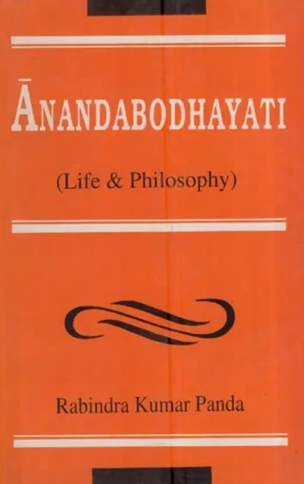
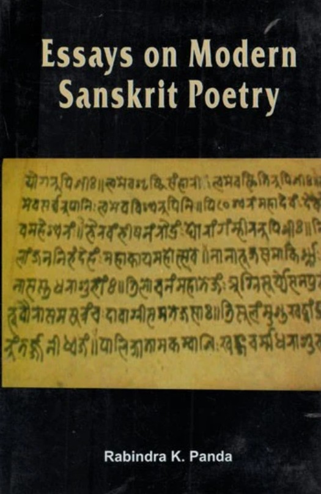
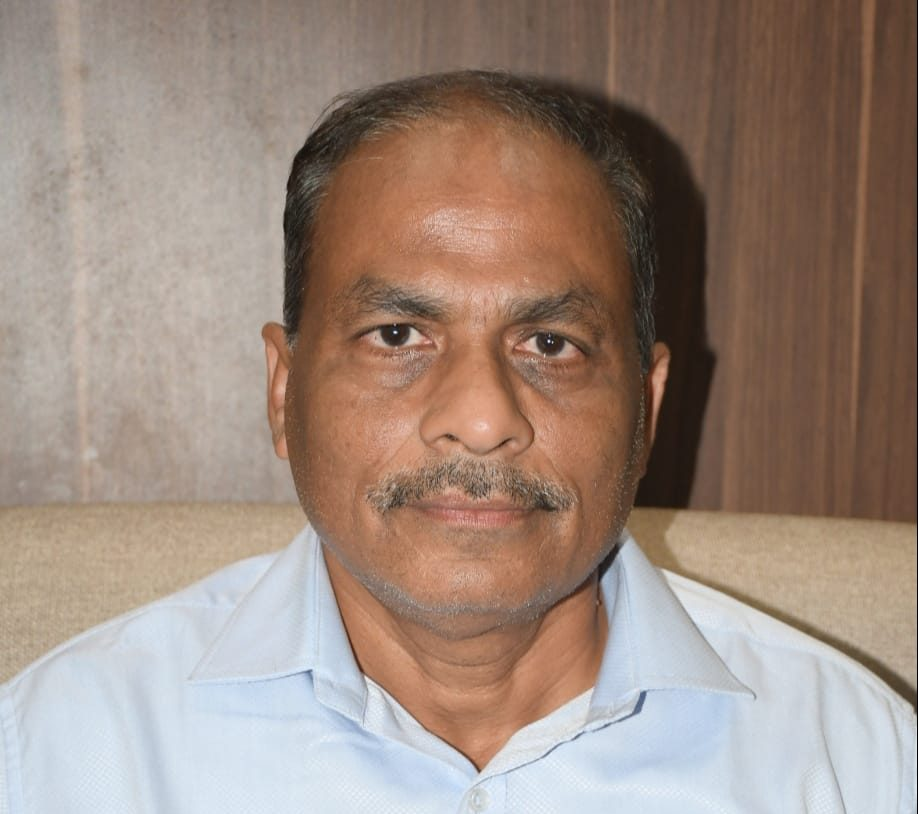

Books
-  📘 Anandabodhayati: Life and Philosophy
-  📗 Essays on Modern Sanskrit poetry
 📕 Research in Indology
📕 Research in Indology
Professor | Researcher | Author | Poet

📕 Research in Indology| No. | Title | Publisher | Year |
|---|---|---|---|
| 1 | Vanavallī (Kāvyasaṅgrahaḥ) | Lions Club of Lalbaug, Baroda | 1996 |
| 2 | Pratidhvaniḥ (Kāvyasaṅgrahaḥ) | Utkal Sahitya Samaj, Allahabad | 1996 |
| 3 | Nīravazaraḥ (Kāvyasaṅgrahaḥ) | Paramamitra Prakashan, Delhi | 1998 |
| 4 | Urvī (Kāvyasaṅgrahaḥ) | Paramamitra Prakashan, Delhi | 1998 |
| 5 | Śatadalam (Muktakaāvyasaṅgrahaḥ) | Paramamitra Prakashan, Delhi | 2002 |
| 6 | Chinnacchāyā (Laghukathāsaṅgraha) | Arvachina Sanskrit Sahitya Parishad, Vadodara | 2005 |
| 7 | Balākā (Kāvyasaṅgrahaḥ) | Arvachina Sanskrit Sahitya Parishad, Vadodara | 2006 |
| 8 | Kāvyakairavam (Kāvyasaṅgrahaḥ) | Arvachina Sanskrit Sahitya Parishad, Vadodara | 2007 |
| 9 | Kāvyāmṛtataraṅgiṇi (Kāvyasaṅgrahaḥ) | Arvachina Sanskrit Sahitya Parishad, Vadodara | 2009 |
| 10 | Bhāvabhūmiḥ (Kāvyasaṅgrahaḥ) | Arvachina Sanskrit Sahitya Parishad, Vadodara | 2012 |
| 11 | Subhāṣitasudhābindu (Subhāṣitaśatakam) | Arvachina Sanskrit Sahitya Parishad, Vadodara | 2012 |
| 12 | Śrīmandiram (Laghukathāsaṅgraha) | Sanskritabharati, New Delhi | 2012 |
| 13 | Kathālatikā (Laghukathāsaṅgraha) | Arvachina Sanskrit Sahitya Parishad, Vadodara | 2014 |
| 14 | Yo Madbhaktaḥ sa me priyaḥ (Bālanāṭakāni) | Arvachina Sanskrit Sahitya Parishad, Vadodara | 2012 |
| 15 | Jwālā Tathā Jalam | Arvachina Sanskrit Sahitya Parishad, Vadodara | 2014 |
| 16 | Saṁlāpasaraṇiḥ | Arvachina Sanskrit Sahitya Parishad, Vadodara | 2011 |
| 17 | Mobāilīśatakam | Included in "Sanskrita aur Sanskruti ki samasamayikata", Brick Publications, Anand | 2015 |
| 18 | Rabindara Sanskrit-kathākuñjaḥ | New Bharatiya Book Corporation, New Delhi | 2018 |
| 19 | Malālacaritam (Bālakāvyam) with Hindi and Gujarati translation | Arvachina Sanskrit Sahitya Parishad | 2019 |
| 20 | Sayājigauravam - Mahākāvyam | Gujarat Sanskrit Sahitya Akademi | 2019 |
| 21 | Kṛśodarī (Laghukāvyasaṅgrahaḥ) | Arvachina Sanskrit Sahitya Parishad, Vadodara | 2020 |
| 22 | Padyabandhāḥ (Sanskrit Magazine) | Veenapani Sanskrit Parishad, Bhopal | 2021 |
| 23 | Laghupādapo’hm | Sanskrit-pratibha Sahitya Academy, New Delhi | 2021 |
| 24 | Coronakṛtāntaśatakam | — | — |
| 25 | Yatrāsti Mamatā Tatrāsti Me Manaḥ (Saṃsmaraṇam) | Arvachina Sanskrit Sahitya Parishad, Vadodara | 2021 |
| 26 | Aham Ādivāsī | Under Publication | — |
| 27 | Thāi-saundarya-saṃskṛti (Padyabhandhā) | Under Publication | — |
| 28 | Śrīpratāpacandracaritam-mahākāvyam | Under Publication | — |
| 29 | Śrīpramukhaswāmicaritam-mahākāvyam | Under Publication | — |
| No. | Title | Publisher | Year |
|---|---|---|---|
| 1 | Suvrittatilakam of Kshemendra | Paramamitra Prakashan, Delhi | 1998 |
| 2 | Kumarasambhavam (5th Canto) with English Translation | Bharatiya Kala Prakashan, Delhi | 1998 |
| 3 | Manusmriti (II & III Chapters) with English Translation | Paramamitra Prakashan, Delhi | 1999 |
| 4 | Research in Indology: A New Perspective | Bharatiya Kala Prakashan, Delhi | 1998 |
| 5 | Bhaminivilasa (with English Translation and Sanskrit Commentary) | Bharatiya Kala Prakashan, Delhi | 2004 |
| 6 | A Survey of Post-Shankara Advaita Vedanta | Paramamitra Prakashan / Eastern Book Linkers, Delhi | 2000 |
| 7 | Studies in Vedanta Philosophy | Bharatiya Kala Prakashan, Delhi | 2002 |
| 8 | Shatakakavyas in Sanskrit with English Translation | Bharatiya Kala Prakashan, Delhi | 2006 |
| 9 | Lokaprajna, Prof. Uma Deshpande Felicitation Volume | Sarasvati, Orissa | 2006 |
| 10 | Vedic Reader | Bharatiya Kala Prakashan, Delhi | 2006 |
| 11 | Avenues in Sanskrit Literature | Bharatiya Kala Prakashan, Delhi | 2007 |
| 12 | Kavyadarsha of Dandin | Bharatiya Kala Prakashan, Delhi | 2007 |
| 13 | Kshemendra Studies | Bharatiya Kala Prakashan, Delhi | 2010 |
| 14 | Significant Facets of Modern Sanskrit Literature | Bharatiya Kala Prakashan, Delhi | 2011 |
| 15 | Yajnavalkya-Smrtih | Bharatiya Kala Prakashan, Delhi | 2011 |
| 16 | Sanskrit Prose Literature of Modern Period | Arvachina Sanskrit Sahitya Parishad, Vadodara | 2011 |
| 17 | Sanskrit Drama Literature of Modern Period | Arvachina Sanskrit Sahitya Parishad | 2012 |
| 18 | Hinduism in India | Bharatiya Kala Prakashan, Delhi | 2014 |
| No. | Name of the Award | Year | Sponsored by |
|---|---|---|---|
| 1 | Bronze Medal for standing third in Elocution Competition on Kalidasa | 1983 | Kalidasa Academy, Ujjain |
| 2 | Bronze Medal in All India Elocution Competition | 1983 | Shiksha & Sanskrit Mantralaya, Madras |
| 3 | University Gold Medal for securing highest marks in Acharya | 1984 | Shree Jagannatha Sanskrit University, Puri, Orissa |
| 4 | Sanskrita Sahitya Puraskara for the book Pratidhvani (Sanskrit poems) | 1997 | Uttar Pradesh Sanskrit Sansthan, Lucknow |
| 5 | Prize for Akhil Bhartiya Sanskrita Sloka Samasyapurti Pratiyogita | 2002–03 | Delhi Sanskrit Academy, Delhi |
| 6 | International Ramakrishna Sanskrit Award | 2003 | World Education Foundation, Canada |
| 7 | V. Raghvan Prize for Best Research Paper at AIOC | 2003 | 41st Session of AIOC, Puri, Orissa |
| 8 | World Medal of Honour | 2003 | American Biographical Institute |
| 9 | Akhila Bhartiya Laghukatha Puraskara | 2004 | Delhi Sanskrit Academy, Delhi |
| 10 | Akhil Bharatiya Kalidasa Award for the book Chinnacchaya | 2008 | Kalidasa Sanskrit Academy, Ujjain |
| 11 | Best Book Award for Chinnacchaya | 2009 | Sanskrit Sahitya Academy, Gujarat |
| 12 | Akhila Bhartiya Laghu Nataka Puraskara | 2010 | Delhi Sanskrit Academy |
| 13 | Award by Shri Shri Jayendra Saraswathi Swamiji | 2010 | Platinum Jubilee Charitable Trust, Kanchi Kamakoti Peetam |
| 14 | Award for Shreemandiram (Short Stories in Sanskrit) | 2017 | Sanskrit Sahitya Academy, Gujarat |
| 15 | Award for Malālacaritam (Bālakāvyam) | 2018 | Sanskrit Sahitya Academy, Gujarat |
| 16 | Award for Śrīsayājigauravam (Mahākāvyam) | 2019 | Sanskrit Sahitya Academy, Gujarat |
Email: panda_rabindra@rediffmail.com
Mobile: +91 99742 62038